구분 | 명칭 | 설명 |
| Search | 통합검색을 위한 키워드 입력창 |
| User Information | 현재 접속 중인 사용자 정보 표시 |
| Project List | 프로젝트 명, 관리자, 기간 등 프로젝트 요약정보 표시 |
| To-do List | 프로젝트별 To-do List 표시 |
| Board | 주요 공지사항 표시 |
| Notice | 공지사항 목록 |
SILKROAD 홈은 프로젝트 명, 관리자, 기간 등 프로젝트 요약정보, To-do List 및 Notice(공지)를 확인할 수 있도록 구성되어 있다. SILKROAD 홈 화면에서 프로젝트 명을 클릭하면 프로젝트 홈으로 이동한다.
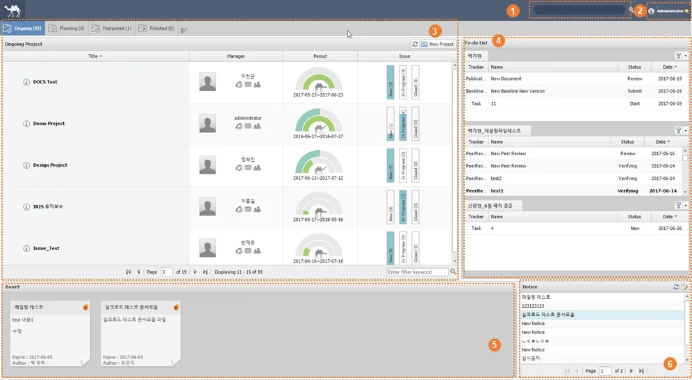 |
구분 | 명칭 | 설명 |
| Search | 통합검색을 위한 키워드 입력창 |
| User Information | 현재 접속 중인 사용자 정보 표시 |
| Project List | 프로젝트 명, 관리자, 기간 등 프로젝트 요약정보 표시 |
| To-do List | 프로젝트별 To-do List 표시 |
| Board | 주요 공지사항 표시 |
| Notice | 공지사항 목록 |
프로젝트 정보창은 프로젝트의 정보 및 등록 문서 현황을 열람 할 수 있다. 프로젝트 정보는 해당 프로젝트로 이동한 후 프로젝트 관리자 또는 사용자 권한 ‘Admin’부여된 사용자가 프로젝트 설정을 통해 수정할 수 있다.
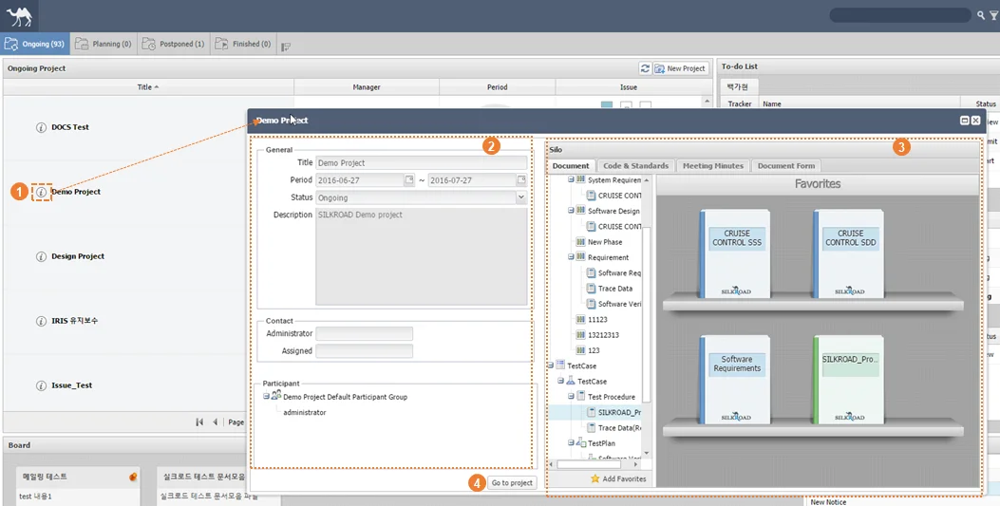 |
구분 | 명칭 | 설명 |
|
| 프로젝트 정보 창 버튼 |
| General | 프로젝트 명, 기간, 참여자 등 기본정보 표시 |
| Silo | 문서, Code & Standard, 회의록 등 프로젝트 관련 문서 저장소 |
| Go to project | 선택된 프로젝트의 프로젝트 홈 화면으로 이동 |
실크로드 프로젝트 생성을 위한 버튼은 두 가지 위치에 제공한다. 첫 번째 위치는 실크로드 홈 화면, 두 번째 위치는 실크로드 프로젝트 진입 후 화면 상단의 프로젝트 드롭다운 메뉴이다.
① 'Create Project', 또는 ‘New Project’ 버튼을 클릭한다.
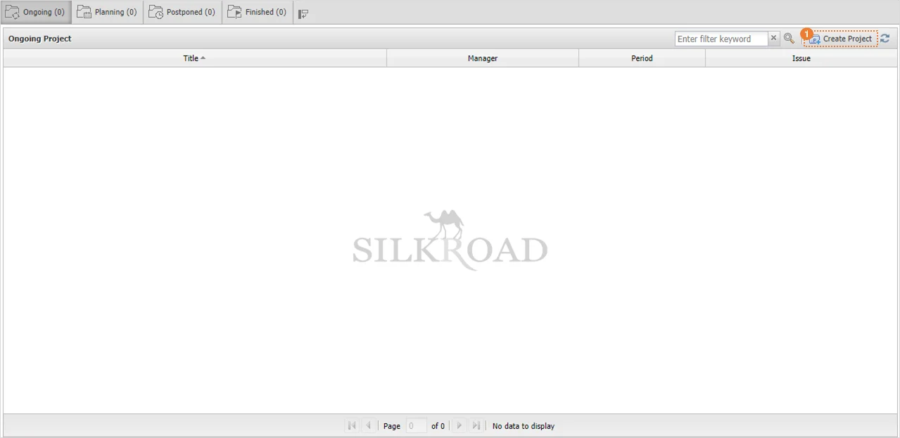 |
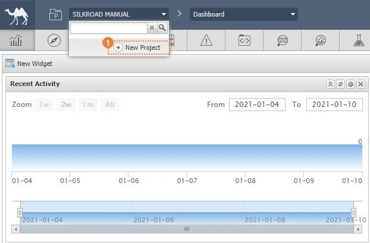 |
② 프로젝트 정보 입력
- 필수 입력 정보 : Title, Start Date, End Date을 입력한다. 필수 입력 필드는 필드 이름 앞에 *표시를 가지며 입력을 생략할 수 없다.
- 선택 입력 정보 : Status, Description을 입력한다.
③ ‘OK’ 버튼을 클릭하여 프로젝트 생성을 완료한다.
④ 프로젝트 생성 완료 알림 팝업에서 ‘Yes' 버튼 클릭 시 생성된 프로젝트로 이동한다.
|
생성된 프로젝트 화면은 다음과 같이 구성된다.
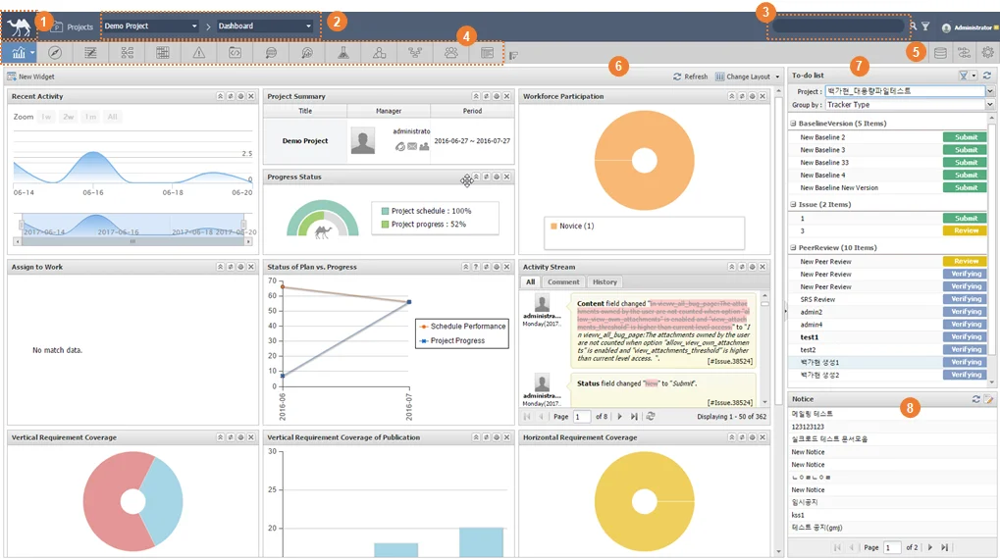 |
구분 | 명칭 | 설명 |
| SILKROAD 홈 | SILKROAD 홈으로 이동 |
| 프로젝트/트래커 네비게이션 | 프로젝트 및 트래커 바로가기 |
| Search | 통합검색을 위한 키워드 입력창 |
| 메뉴 바 | SILKROAD 메뉴와 Tracker 목록 |
| Project Menu | Silo(문서 저장소), Workflow, 프로젝트 설정 아이콘 |
| To-do List | 프로젝트 및 트래커 별 나에게 할당된 업무 목록 |
| Notice | 공지사항 목록 |
프로젝트 진입 후 화면 우측 상단에 위치한 ‘ ’버튼을 클릭하여 프로젝트 설정 창을 생성한다. 프로젝트 설정에서는 프로젝트 정보(Information), 참여자(Participant), 사용자의 역할과 권한(Role & Authority), 메뉴(Menu), 필드 설정(Custom Fields), Workflow(Worlflow Setting), DOCS 스타일 지정(DOCS Setting)에 대한 추가/수정/삭제 기능을 제공한다.
’버튼을 클릭하여 프로젝트 설정 창을 생성한다. 프로젝트 설정에서는 프로젝트 정보(Information), 참여자(Participant), 사용자의 역할과 권한(Role & Authority), 메뉴(Menu), 필드 설정(Custom Fields), Workflow(Worlflow Setting), DOCS 스타일 지정(DOCS Setting)에 대한 추가/수정/삭제 기능을 제공한다.
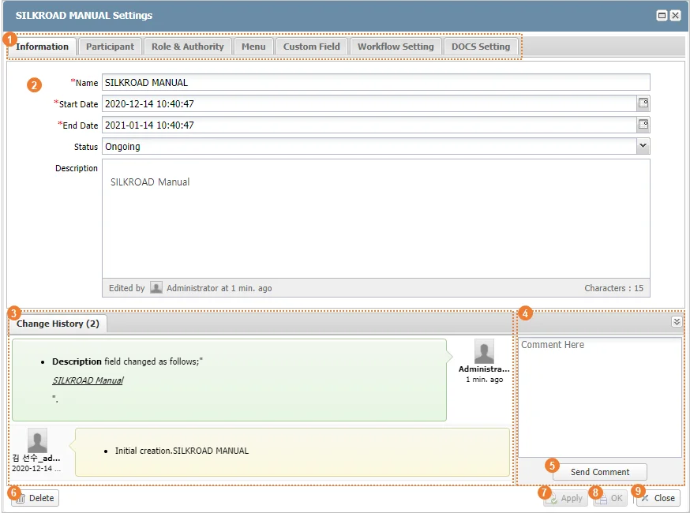 |
구분 | 명칭 | 설명 |
| Menu | 프로젝트 설정 메뉴 |
| Information | 프로젝트 정보 |
| Changed History | 프로젝트 정보 수정 이력, 코멘트 등록, 알림 등 표시 |
| Comment | 사용자 의견 작성 영역 |
| Send Comment | 작성된 사용자 의견 기록 |
| Delete | 프로젝트 삭제 |
| Apply | 변경 내용 적용 |
| OK | 변경 내용 저장 후 닫기 |
| Close | 창 닫기 |
프로젝트 관련 정보를 수정할 수 있다. 변경 이력은 ‘Change History’에 기록된다.
- Name : 프로젝트 명
- Start Date : 프로젝트 시작 날짜
- End Date : 프로젝트 종료 날짜
- Status : 프로젝트 상태(Ongoing, Planning, Postponed, Finish)
- Description : 프로젝트 설명(수정 시 Edit by 사용자명, 변경 시간 표시)
필수 입력 필드를 입력하지 않고 저장 시도 시 저장되지 않고 안내 메시지를 생성한다. |
프로젝트 정보 변경 이력은 시스템에 자동으로 기록된다. 또한 사용자가 코멘트(Comment)를 남기거나 실크로드 아이템의 링크를 표시할 수 있다.
- 코멘트 등록;
① Change History 탭을 클릭 하거나, ‘ ’버튼을 클릭 해 영역을 확장한다.
’버튼을 클릭 해 영역을 확장한다.
② ‘Comment Here’ 영역에 코멘트 작성한다.
③ ‘Send Comment’ 버튼을 클릭해 등록한다.
- 링크 등록;
① Change History 탭을 클릭 하거나, ‘’버튼을 클릭 해 영역을 확장한다.
② ‘Comment Here’ 영역을 우 클릭한다.
③ ‘Link Item’ 기능을 클릭한다.
④ ‘Resource Connector’에서 프로젝트, 메뉴와 아이템을 선택 후 ‘OK’버튼을 클릭한다.
- 코멘트 수정;
⑤ Change History에 등록된 코멘트를 더블 클릭한다.
① ‘Edit Comment’ 창에 내용을 수정한다.
② ‘Update Comment‘ 버튼을 클릭하여 적용한다.
- 코멘트 삭제;
① ‘ ’ 버튼을 클릭한다.
’ 버튼을 클릭한다.
② ‘Do you want to delete it ?’ 팝업에서 ‘OK’ 버튼을 클릭하면 코멘트가 삭제된다.
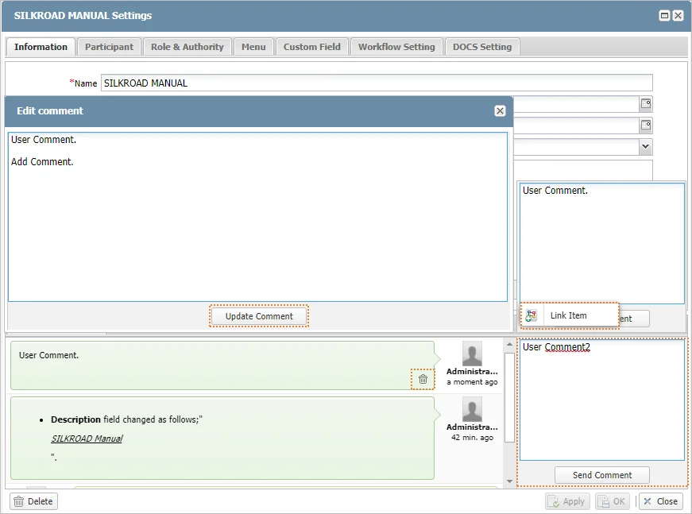 |
프로젝트 참여자를 결정하고 그룹을 생성한다. 실크로드에 등록된 모든 사용자 목록을 기반으로 프로젝트에 참여할 참여자를 선택한다. 사용자 그룹을 생성하고 그룹 별로 사용자를 추가할 수 있다.
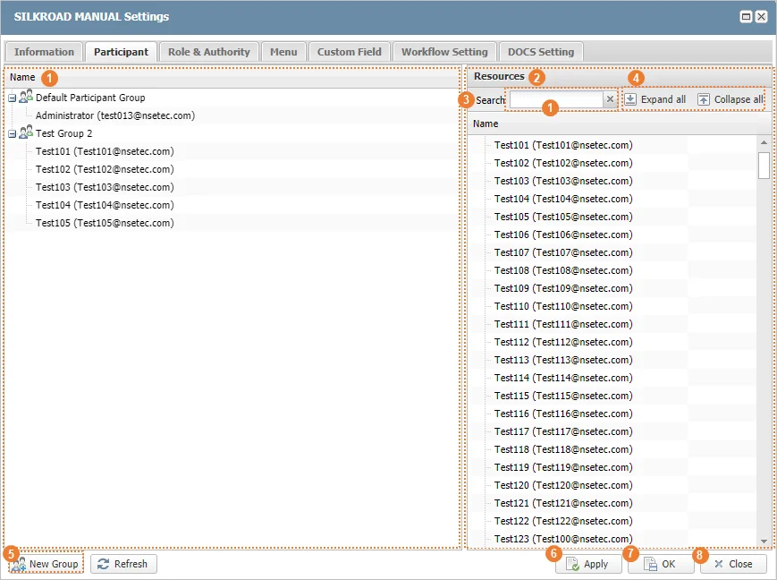 |
구분 | 명칭 | 설명 |
| Participant Tree | 프로젝트 참여자 목록 |
| Resource List | SILKROAD에 등록된 사용자 목록 |
| Search | 사용자 검색 |
| Expand/ | 사용자 목록 확장/축소 |
| New Group | 사용자 그룹 생성 |
| Apply | 변경 내용 적용 |
| OK | 변경 내용 저장 후 닫기 |
| Close | 창 닫기 |
왼쪽 영역에는 프로젝트 참여자 및 그룹이 표시되며, 오른쪽 Resource 영역에는 실크로드에 등록된 모든 사용자가 목록에 표시된다. Resource 에 표시된 사용자를 드래그&드롭하여 프로젝트에 참여 시킬 수 있다. 사용자 추가/삭제는 개별 사용자와 그룹 단위로 가능하다.
① 참여자 추가 : Resource 영역에서 사용자를 선택, 왼쪽 프로젝트 참여자 목록으로 드래그&드롭해 추가한다. Resource 영역에서 사용자가 포함된 그룹(폴더)를 선택해 드래그&드롭 시 그룹(폴더)에 속한 사용자가 모두 추가된다.
② 참여자 삭제 : 프로젝트 참여자 목록에서 사용자를 Resource 영역으로 드래그&드롭해 삭제 한다. 또는 프로젝트 참여된 사용자, 사용자 그룹을 우 클릭해 목록에서 삭제할 수 있다.
③ 'Apply' 또는 ‘OK’ 버튼을 클릭하여 저장한다.
|
사용자를 추가할 수 있는 그룹을 생성한다. 하나의 그룹에 동일한 사용자를 중복해서 추가할 수 없으나, 다른 그룹에는 추가할 수 있다.
① ‘New Group‘ 버튼을 클릭하여 새로운 프로젝트 참여자 그룹을 만든다.
② 'Apply' 또는 ‘OK’ 버튼을 클릭하여 저장한다.
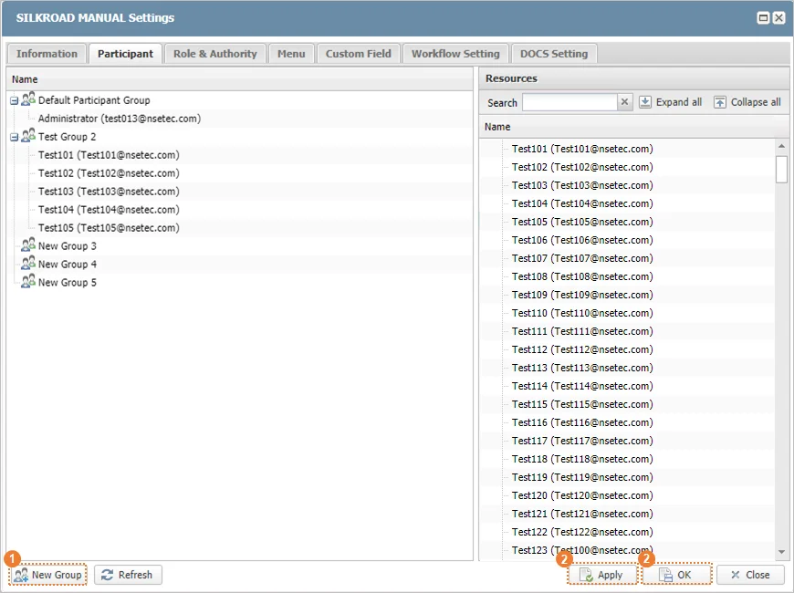 |
사용자 그룹명은 최초 생성 시 ‘New Group no.’를 기본으로 제공된다. 사용자 그룹명은 다음과 같이 수정 가능하며, 특수 문자의 사용이 가능하다.
① 수정하고자하는 그룹명을 더블클릭하거나 우 클릭하여 ‘Rename Group’을 선택한다.
② 그룹명을 수정한다.
③ 'Apply' 또는 ‘OK’ 버튼을 클릭한다.
|
프로젝트 참여 목록의 사용자 그룹을 삭제한다. 그룹을 삭제하는 경우 그룹에 포함된 사용자도 일괄 삭제된다.
① 삭제하고자 하는 그룹명을 우 클릭한다.
② ‘Delete Group' 버튼을 선택한다.
③ 'Apply' 또는 ‘OK’ 버튼을 클릭한다.
|
프로젝트에 참여한 사용자의 역할과 각 메뉴별 권한을 설정 한다.
프로젝트에 참여된 사용자 그룹과 사용자가 표시되고, 각 사용자 별 설정된 메뉴 권한 정보를 표시한다. 사용자 개별, 그룹별로 메뉴 권한을 설정할 수 있다.
|
구분 | 명칭 | 설명 |
| Go to Participant tab | 참여자 탭으로 이동 |
| Refresh | 화면 새로고침 |
| Change View | 뷰 모드 전환(Participant view / Role view) 버튼 |
| Participant Tree | 그룹 및 그룹별 참여자 표시 |
| Authority Workspace | 참여자별 권한을 설정할 수 있는 영역 |
| Apply | 변경 내용 적용 |
| OK | 변경 내용 저장 후 닫기 |
| Close | 창 닫기 |
① 사용자명과 같은 행에 있는 메뉴 권한 셀을 더블 클릭한다. 해당 사용자의 전 메뉴 권한을 일괄 변경코자 할 때 사용자 명과 메뉴원한 사이 위치한 ‘Authority’ 셀을 클릭한다.
② 생성되는 권한 목록 Admin, Write, Read, None 중 하나를 선택한다.
- Admin : 관리자 권한으로 읽기/쓰기/삭제 권한과 잠금(Lock) 문서에 대한 편집 가능(프로젝트 관리자를 제외한 다른 사용자에 의해 잠긴 문서 잠금 해제 권한)
- Write : 읽기/쓰기 가능
- Read : 읽기만 가능
- None : 문서에 접근 권한이 없으며, 문서 내용 열람 불가
③ 'Apply' 또는 ‘OK’ 버튼을 클릭한다.
① 사용자명가 포함된 그룹과 같은 행에 있는 메뉴 권한 셀을 더블 클릭한다.
② 생성되는 권한 목록 Admin, Write, Read, None 중 하나를 선택한다.
③ ‘Do you want to apply identical authority for group member?’ 팝업에서 ‘Yes’ 버튼을 클릭한다.
① 'Apply' 또는 ‘OK’ 버튼을 클릭하여 저장한다.
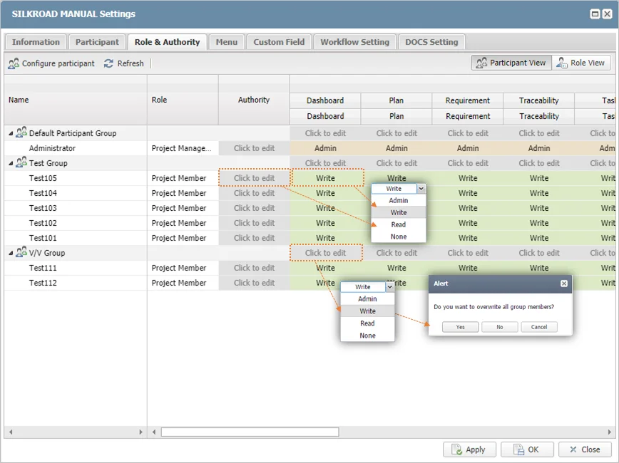 |
프로젝트 참여자는 모두 특정 역할(Role)을 가진다. 기본 설정으로 프로젝트를 최초 생성한 관리자는 ‘Project Manager’, 참여자는 ‘Project Member’ 역할이다. 이 역할은 관리자가 추가/수정/삭제될 수 있다.
|
구분 | 명칭 | 설명 |
| member role setting | Project Participant 목록 확장 |
| Refresh | 화면 새로고침 |
| New role | Role 생성 |
| Edit Selected Role group | 역할 명칭 변경, 삭제 |
| Edit Selected member | 사용자 권한 변경, 삭제 |
| Change View | 뷰 모드 전환(Participant view / Role view) 버튼 |
| Role Member Tree | 역할 및 역할별 참여자 목록 |
| Authority Workspace | 메뉴별/참여자별 권한을 설정할 수 있는 영역 |
| Participant Tree | 프로젝트 그룹 및 그룹별 참여자 목록 |
기본 제공되는 역할 외에 새로운 역할을 생성한다. 새로운 Role을 생성하기 위해서는 ‘Role View’ 탭으로 이동한다.
① ‘New role group’ 버튼을 클릭하여 새로운 ‘Role’ 을 생성한다.
② 새로운 ‘Role’ 의 명칭을 입력한다.
③ 'Apply' 또는 ‘OK’ 버튼을 클릭하여 저장한다.
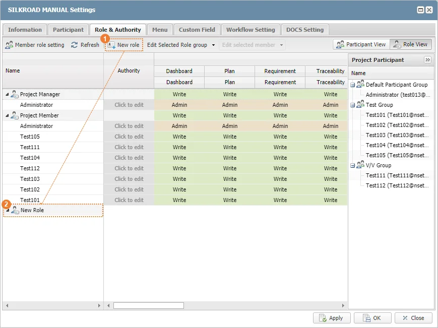 |
① ‘Configure role member’ 버튼 또는 오른쪽의 ‘ ’ 버튼을 클릭한다.
’ 버튼을 클릭한다.
② 역할을 지정하고자 하는 참여자를 Project Participant 목록에서 선택하고 드래그&드롭 하여 역할에 추가한다.
③ 'Apply' 또는 ‘OK’ 버튼을 클릭하여 저장한다.
|
새로 생성한 Role 또는 기존 생성된 Role 명을 변경한다.
① ‘Role View’ 버튼을 클릭한다.
② Role 명칭부를 클릭한다.
③ 상단 메뉴의‘Edit Selected Role Group’ 펼침 단추를 클릭한다.
④ 또는, Role 명을 우 클릭 한 뒤 ‘Rename selected role group’ 버튼을 선택한다.
⑤ 그룹명을 수정한다.
⑥ 'Apply' 또는 ‘OK’ 버튼을 클릭하여 저장한다.
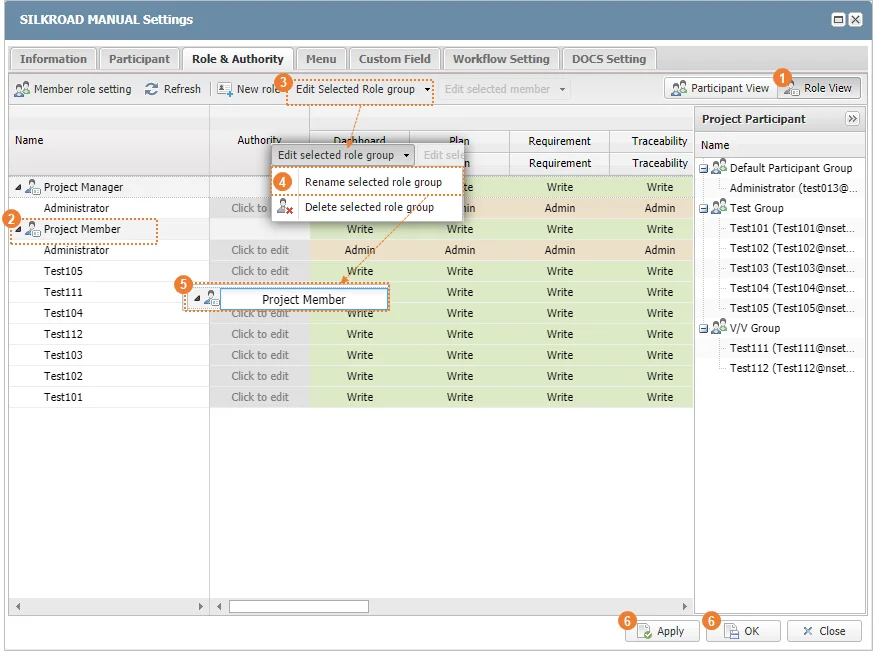 |
생성된 Role 그룹을 삭제한다.
① ‘Role View’ 버튼을 클릭한다.
② Role 그룹을 선택한다.
③ 상단 메뉴 또는 Role을 우 클릭해 ‘Edit selected role group’ 펼침 단추를 클릭한다.
④ ‘Delete selected role group’ 버튼을 선택한다.
⑤ 'Apply' 또는 ‘OK’ 버튼을 클릭하여 저장한다.
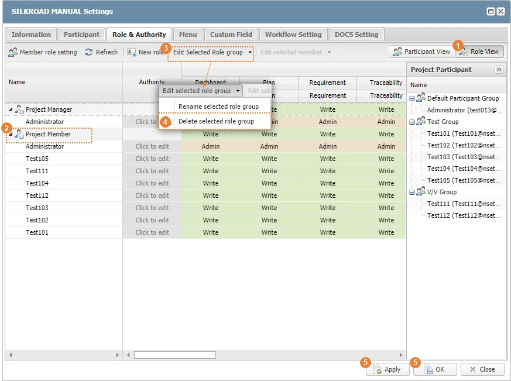 |
‘Inherit role group authority’ 기능은 사용자가 속한 역할의 권한을 사용자에게 일괄적용 하는 기능이다. ‘Inherit role group authority’ 사용 시 사용자는 역할에 부여된 각 메뉴의 권한을 적용받는다.
① Role 멤버를 선택한다.
② 상단 메뉴에서 ‘Edit selected role member’ 펼침 단추를 클릭한다.
③ ‘Inherit role group authority’ 버튼을 선택한다.
④ 'Apply' 또는 ‘OK’ 버튼을 클릭하여 저장한다.
|
① Role 멤버를 선택한다.
② 상단 메뉴 또는 Role을 우 클릭해 ‘Edit selected role member’ 펼침 단추를 클릭한다.
③ ‘Delete selected role member’ 버튼을 선택한다.
④ 'Apply' 또는 ‘OK’ 버튼을 클릭하여 저장한다.
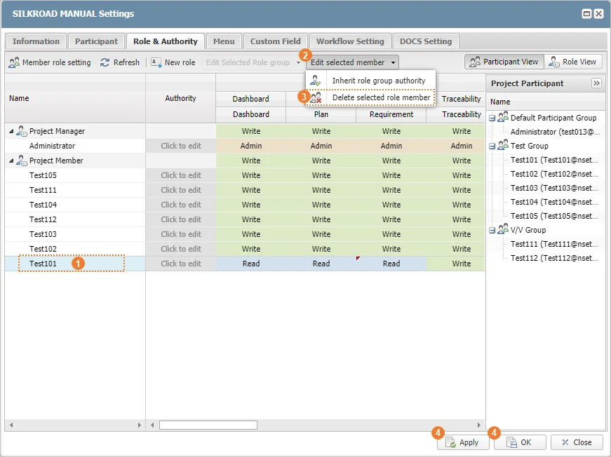 |
‘Menu’ 에서는 단위시스템별로 메뉴를 추가 생성 또는 삭제하고, 특정 메뉴를 숨겨 보이지 않게 설정하는 기능을 제공한다.
|
구분 | 명칭 | 설명 |
| Menu Tree | 프로젝트에 적용된 메뉴들과 트래커(단위시스템) 정보 표시 |
| Type | 메뉴별 트래커 타입 지정 영역 |
| Hide | 메뉴 숨기기 설정 |
| Menu 도구상자 | 메뉴 생성, 이름 변경, 삭제 도구 버튼 |
| 저장 및 닫기 | 선택·입력 내용 저장 및 창 닫기 |
새 메뉴를 생성한다. 새로 생성된 메뉴는 기존 존재하는 메뉴와 독립되어 Workflow 설정, 메뉴 권한 지정을 별도로 수행할 수 있다.
① 단위 시스템 그룹을 선택한다.
② 하단의 ‘New Menu’ 버튼 또는 선택한 그룹을 우 클릭하여 ‘New Menu’ 버튼을 선택한다.
③ 'Apply' 또는 ‘OK’ 버튼을 클릭하여 저장한다.
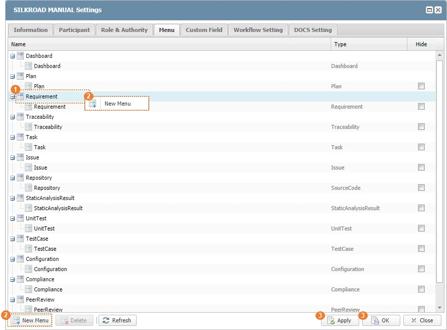 |
신규 생성 또는 기존 생성된 메뉴 명을 변경한다.
① 메뉴 명을 클릭 하고 메뉴명을 수정한다.
② 'Apply' 또는 ‘OK’ 버튼을 클릭하여 저장한다.
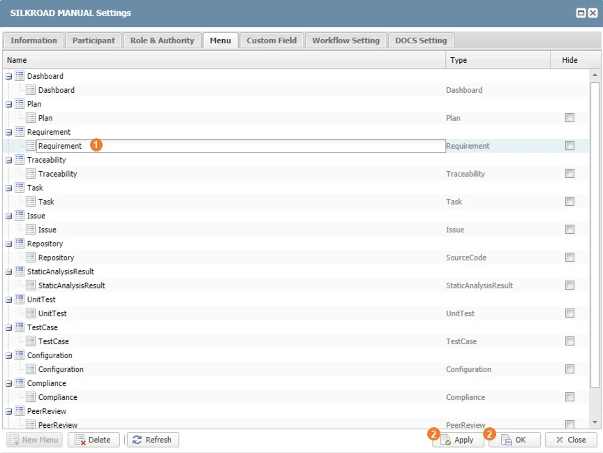 |
선택한 메뉴를 삭제한다. 해당 메뉴에 존재하는 문서, 파일 등이 동반 삭제된다.
① 메뉴를 선택한다.
② ‘Delete’ 버튼 클릭 또는 마우스 오른쪽 단추를 클릭하여 ‘Delete’ 버튼을 선택한다.
③ ‘Apply’ 또는 ‘OK’ 버튼을 클릭하여 저장한다.
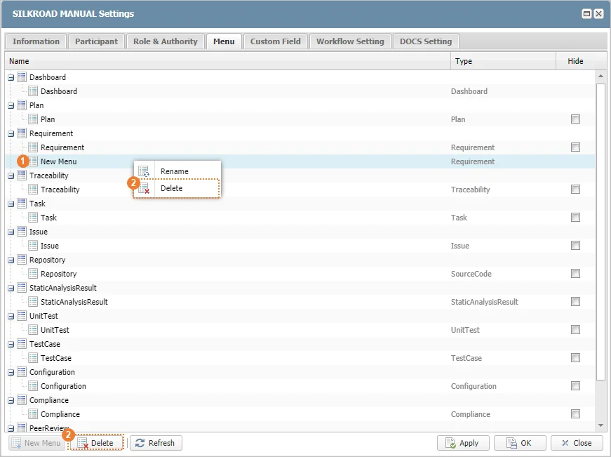 |
관리자는 특정 메뉴를 숨김 설정해 프로젝트의 다른 사용자에게 노출되지 않도록 할 수 있다.
① 대상 메뉴의 Hide 칼럼에 있는 체크 박스를 체크한다.
② ‘Apply’ 또는 ‘OK’ 버튼을 클릭하여 저장한다.
SILKROAD의 work item(작업 아이템; 생성 문서, 파일 등)은 문서 및 파일의 정보를 표시하는 정보창을 갖는다. 각 정보창에 표시되는 정보는 ‘커스텀필드’ 기능을 통해 사용자가 원하는 필드로 구성할 수 있다. 실크로드에서는 사용자가 정보창에 추가할 수 있는 속성 필드(Custom Template)를 제공한다. 또한, 필드 간 dependency 설정, 레이아웃 변경, 정보창 탭 생성 등 다양한 기능을 제공한다.
|
구분 | 명칭 | 설명 |
| Tracker | 프로젝트에 적용된 트래커 목록 |
| Designer | 각 필드 표시 및 편집 영역 |
| Preview | 필드 설정 미리보기 |
| Custom Templates | SILKROAD가 제공하는 템플릿 표시 |
| Configure Tracker | Dependency Field Filter 설정창 생성 Dependency Field Allow Blank Filter 설정창 생성 Custom Field Template 설정창 생성 |
| Apply | 변경 내용 적용 |
| OK | 변경 내용 저장 후 닫기 |
| Close | 창 닫기 |
커스텀을 위해 제공되는 26개 타입의 필드는 드래그&드롭으로 선택한 메뉴의 디자인 영역에 추가한다.
① 대상 메뉴의 Tracker(정보창 데이터 포멧)를 선택한다.
② 추가할 Template을 선택하고 마우스 드래그&드롭으로 ‘Designer’ 영역에 추가한다.
③ 추가된 Template 정보를 설정 한다.
- Label 수정, Value 설정, Show List 등 옵션 선택, Dependency 필터 설정 등
④ 'Apply' 또는 ‘Save’ 버튼을 클릭하여 저장한다.
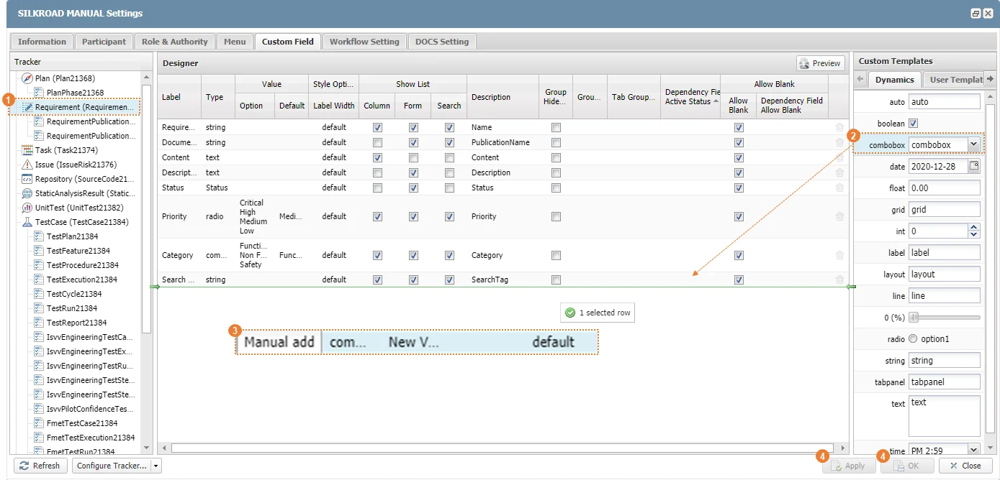 |
‘Designer’ 영역은 필드의 추가와 삭제, 필드 속성 값(Value) 설정, 필터 적용 등 대응하는 정보창에 표시할 데이터의 종류와 형태를 직접 설정할 수 있다. 프로젝트 생성 시 각 ‘Tracker’ 별로 기본 필드를 제공하고 이후 사용자의 필요에 따라 적절히 디자인할 수 있다.
|
구분 | 명칭 | 설명 |
1 | Label | 데이터 정보 창에 표시되는 필드명 |
2 | Type | 정의된 아이템을 Custom Templates에 적용 |
3 | Value - Option | Combo box 혹은 Radio 아이템 값을 입력 |
Value - Default | Combo box 혹은 Radio 아이템 기본 값을 입력 | |
4 | Style Option – Label Width | 셀(리스트) 크기 설정 |
5 | Show List - Column | 리스트에 그리드 화면을 노출할지 결정하는 옵션 |
Show List - Form | SILKROAD 화면 표시 여부 옵션 | |
Show List - Search | 시스템 검색에서 검색 조건으로 사용될지 여부를 결정(확장 검색, Dashboard 검색) | |
6 | Description | Custom Field 설명(실제 화면에는 표시되지 않음) |
7 | Group Hide Label | Layout으로 구성된 Field 들의 Label 표시 여부 설정 |
8 | Group Field | 여러 개의 Field를 하나의 Layout으로 구성하는 기능 |
9 | Tab Group Field | Change Request와 Issue 정보창의 탭을 구성하는 기능 |
10 | Dependency Field Active Status | Dependency Field Active Status 필터 선택 |
11 | Allow Blank | 입력란 빈칸을 허용할지의 여부 결정 |
12 | Dependency Field Allow Blank | Dependency Field Allow Blank 필터 선택 |
13 | Delete | 사용자 설정 필드 삭제 |
필드의 명칭을 표시한다. 한글, 영문, 특수 기호를 지원한다.
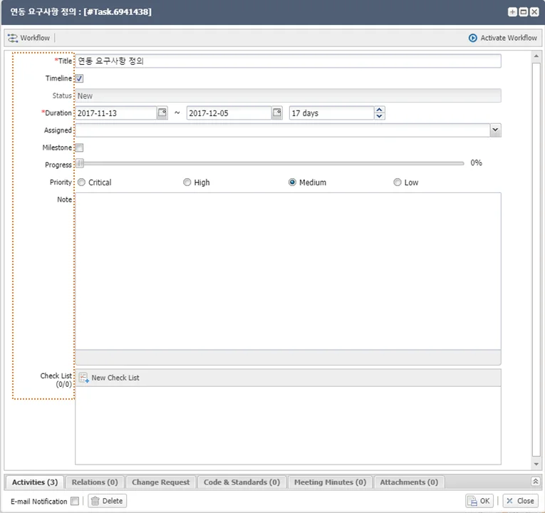 |
디자이너 영역에 추가된 필드의 종류를 표시한다. SILKROAD는 총 256개 종류의 필드를 제공한다.
필드 값을 설정하는 영역이다. 예를 들어 Combo box 필드는 필드 값을 추가하고, 기본 값(Default Value)을 설정 해 기본 값을 표시하도록 할 수 있다. 프로젝트 생성 시 기본 제공되는 필드 중 일부는 필드 값과 기본 설정이 적용되어 있고, 사용자에 의해 수정될 수 있다.
|
‘Label’의 너비를 조절한다. 최로 기본 크기로 설정되어 있고, ‘0~100%’ 범위에서 설정 시 라벨을 표시하는 영역이 넓어지거나 좁게 표시된다.
Show List의 체크 옵션을 통해 필드를 그리드, 정보창에 표시하거나 표시하지 않도록 할 수 있다. Column 옵션 체크 시 그리드 뷰에 해당 필드 칼럼이 표시되고, Form 옵션 체크 시 아이템 정보창에 필드를 표시한다. 두 옵션을 체크 해제 시 그리드 칼럼과 정보창에 필드를 표시하지 않는다. Search 옵션 체크 시 시스템 검색 시 해당 필드를 검색하도록 설정 한다.
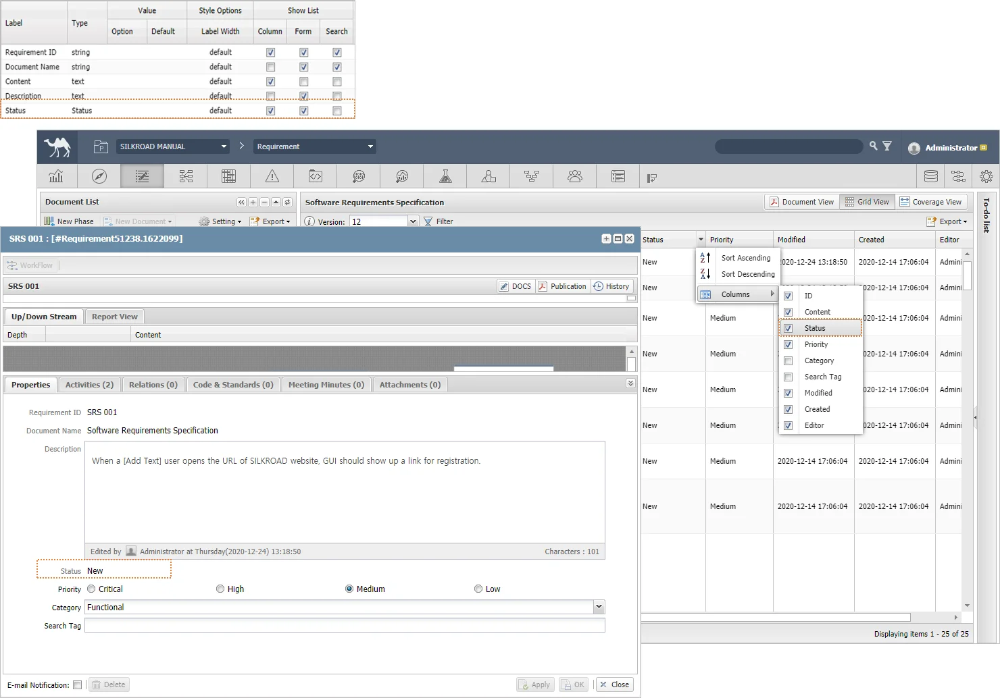 |
필드에 대한 설명을 입력한다. 입력된 설명은 대상 정보창의 필드에 마우스 위치 시 툴팁(Tooltip)으로 표시된다.
Layout 타입(Type)의 그룹 필드는 두 개 이상의 필드를 하나의 그룹으로 묶어 한 줄에 표시한다. 그룹명을 입력하고 그룹으로 지정하고자 하는 필드의 ‘Group Field’ 영역을 클릭 해 지정하고자 하는 그룹을 선택한다.
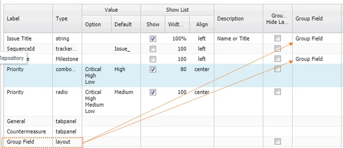
|
그룹 필드(Group Field)로 선택된 필드 중 Group Hide Label 체크 시 그룹에 속한 필드들은 개별 필드 명(Label)을 표시하지 않는다.
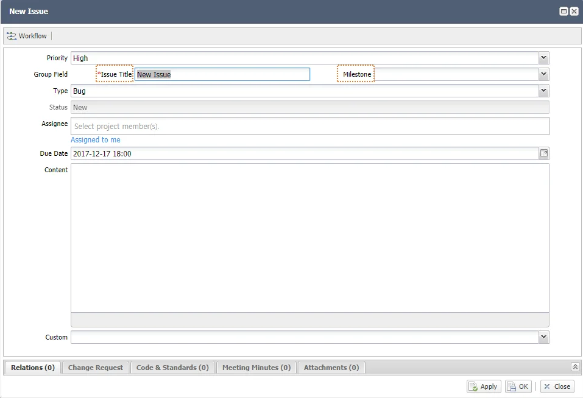 |
정보창에 정보를 표시하는 탭을 생성하여 원하는 필드를 탭에 표시하도록 구성할 수 있다. Tab panel 필를 추가 해 탭을 생성하고, 해당 탭에 표시할 필드의 ‘Tab Group Field’ 영역을 클릭 해 목록에서 표시할 Tab panel를 선택한다.
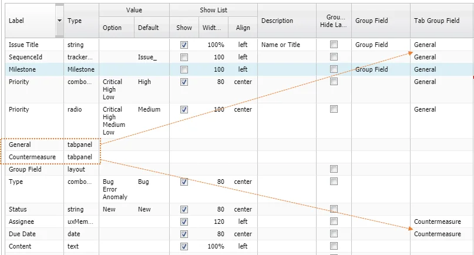 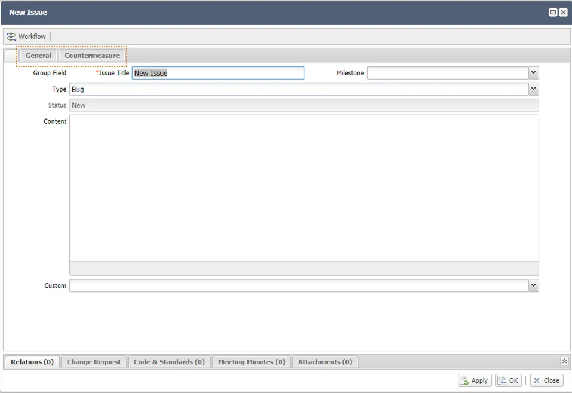 |
필드 값을 대상으로 하는 필터를 생성해 조건에 해당하는 필터에 종속 관계(dependency)를 설정할 수 있다. ‘Configure Tracker’의 ‘Dependency Field Filter’에서 종속 관계 조건을 생성하고 필드 값이 필터에 해당하는 값을 가질 때 정보창에 표시된 해당 필드가 Inactive(비활성화_입력 불가 상태), Active(활성화_입력가능 상태) 또는 Hide(숨기기) 상태가 되도록 조건을 생성할 수 있다. ‘Dependency Field Active Status’ 영역을 클릭 해 필터 목록에서 적용할 필터를 선택한다.
|
‘Allow Blank’옵션은 체크 시 해당 필드를 선택 입력 필드로 지정한다. 선택 입력 필드는 필드 데이터를 반드시 입력해야 하는 필수 입력 필드와 달리 정보를 입력, 선택하지 않고도 저장이 가능하다.
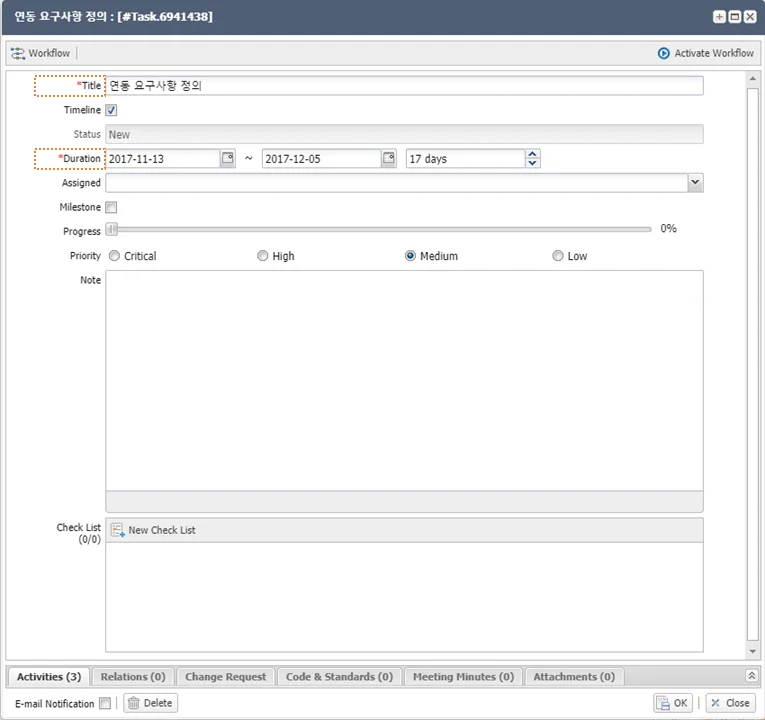 |
필드 값을 대상으로 하는 필터를 생성해 조건에 해당하는 필터에 종속 관계(dependency)를 설정할 수 있다. ‘Configure Tracker’의 ‘Dependency Field Allow Blank Filter’에서 종속 관계 조건을 생성하고 필드 값이 필터에 해당하는 값을 가질 때 정보창에 표시된 해당 필드가 필수 입력 필도 또는 선택 입력 필드 상태가 되도록 조건을 생성할 수 있다. ‘Dependency Field Allow Blank’ 영역을 클릭 해 필터 목록에서 적용할 필터를 선택한다.
사용자가 추가 한 필드와 시스템에 영향을 미치지 않는 필드는 삭제 아이콘을 이용해 삭제 할 수 있다. 삭제 아이콘이 표시되지 않는 필드들은 SILKROAD에서 반드시 관리해야 하는 필드로 사용자가 임의로 삭제할 수 없다.
|
Designer 영역에 설정된 필드 및 필드 값이 반영된 미리보기 화면을 제공한다.
SILKROAD는 Dynamics, User Templates, Systems, Relations 총 4가지 유형으로 필드 템플릿 26종을 제공한다. 사용자는 필요한 템플릿을 원하는 메뉴 Tracker(Work Item의 Format)에 추가하여 정보창에 출력할 수 있다.
① Dynamics : 일반적인 템플릿
② User Templates : Custom Field Template에서 사용자가 추가한 필드 템플릿, SILKROAD의 모든 프로젝트에서 활용할 수 있다.
③ Systems : SILKROAD에서 관리하는 데이터(아이템)를 사용하는 템플릿
④ Relations : 메뉴, 아이템과 연계된 정보를 사용하는 템플릿
텍스트를 입력할 수 있는 한줄 입력 필드를 생성한다.
|
체크박스 필드를 생성한다.
|
콤보박스 필드를 생성하는 템플릿으로 필드 값 영역을 더블클릭해 속성 값을 설정할 수 있다. ‘Default Value’로 선택된 속성 값이 정보창에 기본으로 표시된다.
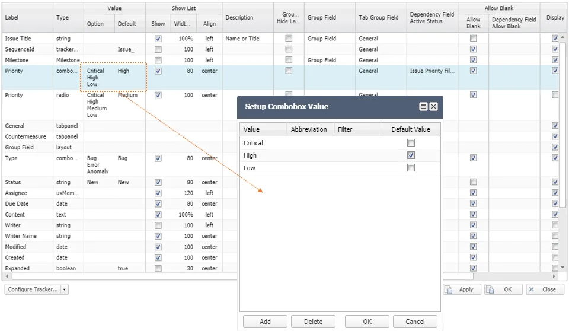 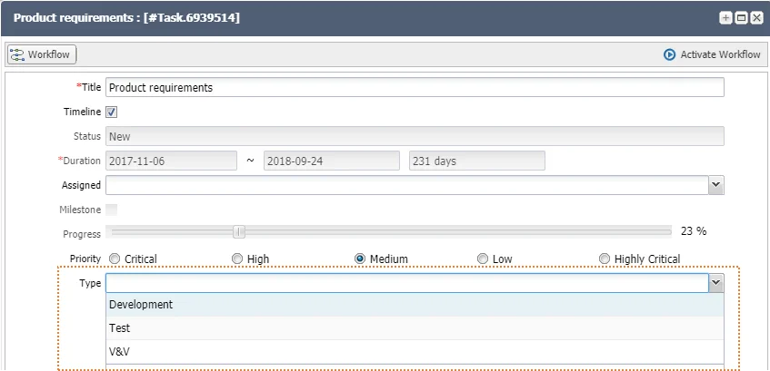 |
Combobox와 Radio 필드는 필드 값간 종속관계를 설정할 수 있다. 특정 Combobox에 선택된 필드 값에 따라 종속관계를 갖는 Combobox의 필드 값의 정보창 내 표시여부(Visible/Invisible)를 설정한다.
① Radio 및 Combobox 필드와 같이 필드 값을 가지는 필드의 필드 값 간 종속관계를 설정할 수 있다. 필드 ‘Value’ 영역을 더블클릭하여 ‘Setup Combobox Value’ 창을 실행한다.
② ‘Filter’ 칼럼을 더블클릭하여 ‘Combobox Dependency Filter’ 창을 실행한다.
③ 종속관계를 설정할 ‘Target Combobox’ 필드를 선택한다. Radio 또는 Combobox 필드를 선택할 수 있다.
④ 선택한 ‘Target Combobox’의 필드 값 선택에 따라 필드 값의 표시여부(Visible/invisible)를 선택한다.
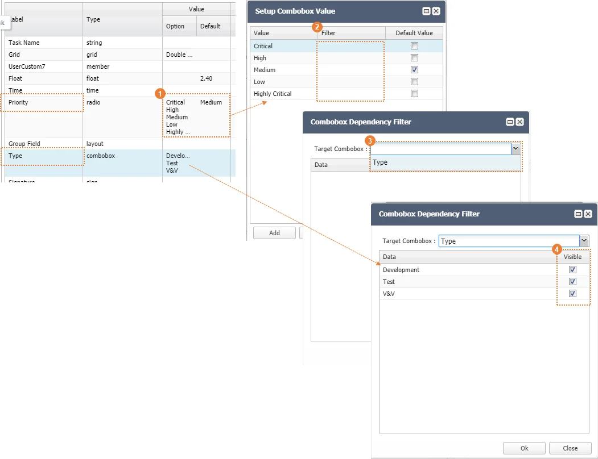 |
선행 Combobox/Radio 필드가 특정 필드 값을 가질 때 종속관계가 설정된 Combobox 또는 Radio 필드는 Visible 필드 값만 표시하게 된다. |
날짜 입력 필드를 생성한다.
|
숫자(소수 포함)를 입력할 수 있는 한줄 입력창을 생성한다.
|
그리드(테이블)필드를 생성하는 템플릿이다. 그리드의 칼럼은 Combobox와 Text 필드로 구성할 수 있으며, Combobox의 Value와 Default Value, 칼럼 영역 너비를 설정할 수 있다.
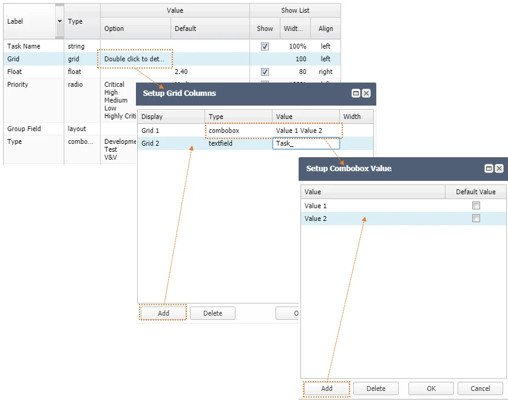 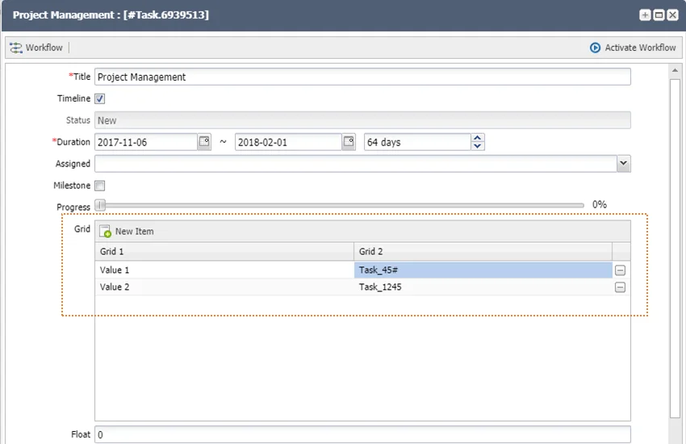 |
숫자 입력 필드를 생성한다.
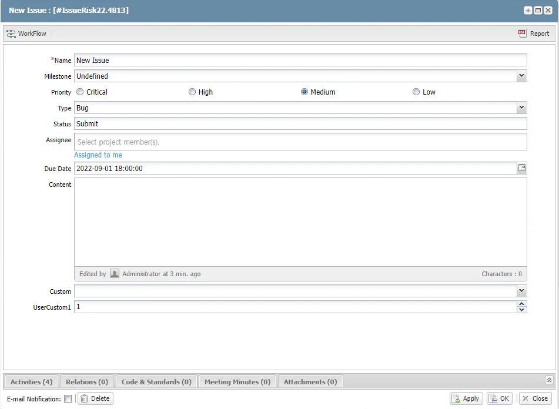 |
속성 값 입력창 없이 Label에 입력한 정보만 표시되는 필드를 생성한다.
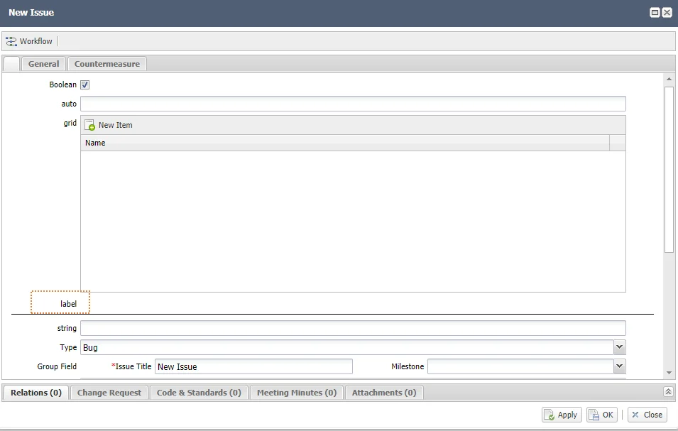 |
지정 필드를 하나의 그룹으로 정렬하는 필드를 생성한다.
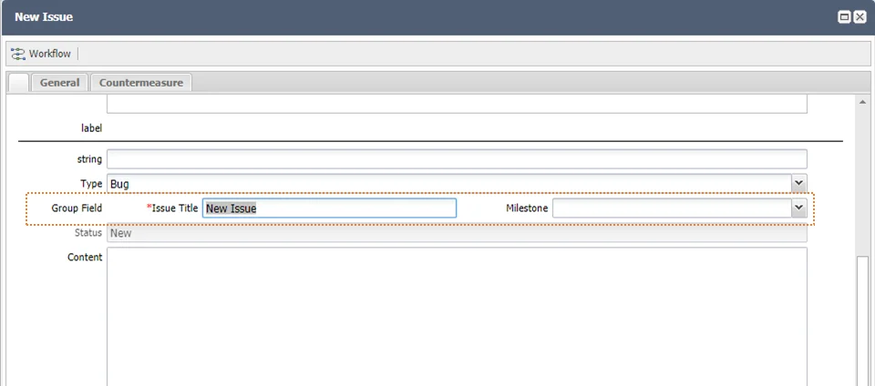 |
구분선(가로줄)을 입력하는 필드를 생성한다.
|
Rate를 입력하는 percentage 바 필드를 생성한다.
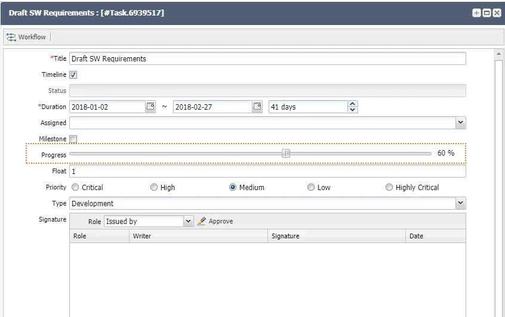 |
라디오 버튼 필드를 생성한다. ‘Value’ 영역을 더블클릭하여 라디오 버튼 값을 설정할 수 있다. ‘Default Value’로 선택된 필드 값이 정보창에 기본으로 표시된다.
|
텍스트를 입력할 수 있는 한줄 입력창 필드를 생성한다.
|
정보창의 탭을 구성하는 필드를 생성한다. 정보창에 여러 개의 분리된 탭을 생성하고 지정한 필드를 각 탭에 위치하도록 구성할 수 있다. Tabpanel 템플릿으로 탭을 생성하고, 해당 탭에 표시할 필드의 Tab Group Field에 각 Tabpanel를 선택한다.
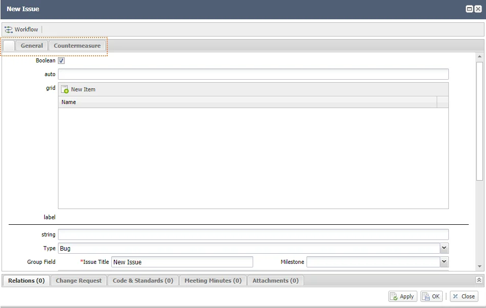 |
텍스트를 입력하는 Text editor 필드를 생성한다.
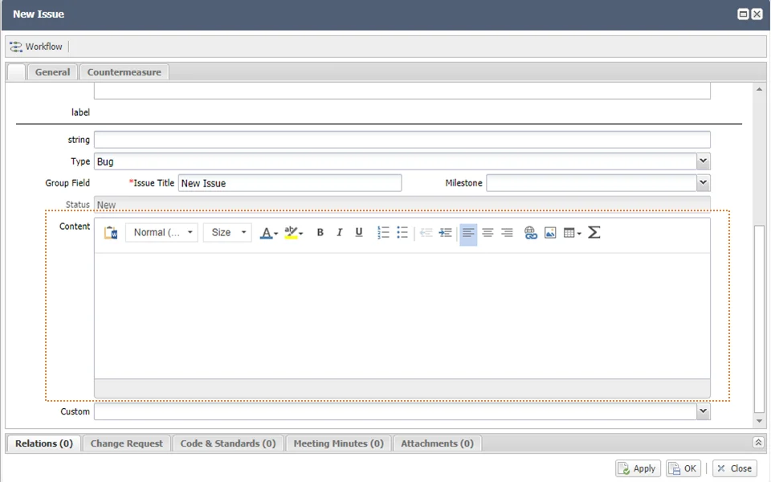 |
시간을 입력하는 Combobox 필드를 생성한다.
|
타이머 필드를 생성한다. 타이머는 시작과 정지 버튼으로 시간을 측정하고 Edit 버튼을 통해 사용자 정의 시간을 입력하거나 리셋 할 수 있다.
사용자 권한 ‘Admin’이 설정된 사용자는 Admin 메뉴 중 ‘Custom Field Template’을 통해 템플릿을 생성해 모든 프로젝트에서 사용하도록 제공할 수 있다. 생성한 템플릿은 ‘User Template’ 에 추가되어 각 프로젝트에서 디자이너 영역에 추가해 활용할 수 있다.
|
프로젝트에 참여된 사용자 목록을 제공하는 필드를 생성한다. ‘Assignee’ 템플릿은 하나의 Tacker에 중복 추가 할 수 없다.
|
Issue Tracker에 사용되어 이슈 정보창에 표시되는 타입 필드를 생성한다.
|
우선순위를 선택할 수 있는 라디오 버튼 필드를 생성한다. ‘Priority’ 템플릿은 하나의 Tacker에 중복 추가 할 수 없다.
|
아이템의 생성 순서에 따라 고유의 아이디를 부여한다. 관리자는 ‘Sequence Id’ 갱신 버튼을 사용해 아이디를 갱신할 수 있다. ‘SequenceId’ 템플릿은 하나의 Tacker에 중복 추가 할 수 없다.
|
사용 계정에 등록된 사용자의 서명을 입력할 수 있는 필드를 생성한다. 사용자는 계정과 비밀번호를 입력 해 로그인 계정 또는 다른 사용자 계정에 저장된 서명을 삽입한다. ‘Sign’ 템플릿은 하나의 Tacker에 중복 추가 할 수 없다.
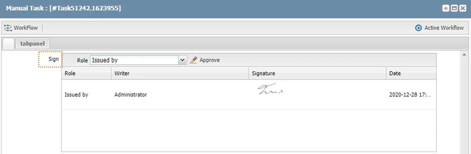 |
SILKROAD 에 등록된 아이템들 간에 연계하고 해당 정보를 표시하는 필드를 생성한다. ‘Resource Connector’ 창을 통해 프로젝트에 등록된 아이템과 관계를 생성한다.
|
SILKROAD 에 등록된 모든 사용자 계정 목록을 제공하는 필드를 생성한다.
|
협업관리시스템(Task Management) 에 생성된 마일스톤 목록을 제공하는 필드를 생성한다.
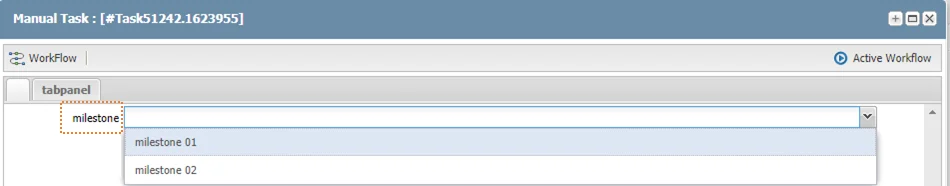 |
|
프로젝트에 참여된 사용자 계정 목록을 제공하는 필드를 생성한다.
필드 값을 대상으로 하는 필터를 생성해 조건에 해당하는 필터에 종속 관계(dependency)를 설정한다. 대상으로 하는 필드의 값이 필터에 해당하는 값을 가질 때 정보창에 표시된 대상 필드가 Inactive(비활성화_입력 불가 상태), Active(활성화_입력가능 상태) 또는 Hide(숨기기) 상태가 되도록 조건을 생성한다.
① 필터를 생성할‘Tracker’를 선택 한다.
② 하단 ‘Configure Tracker Setting’버튼을 누른 후‘Dependency Field Filter’를 클릭한다.
③ ‘Setup Field Dependency’창에서 ‘New Filter’를 클릭한다.
④ 필터 명을 입력하고 ‘OK’버튼을 클릭해 필터를 생성한다.
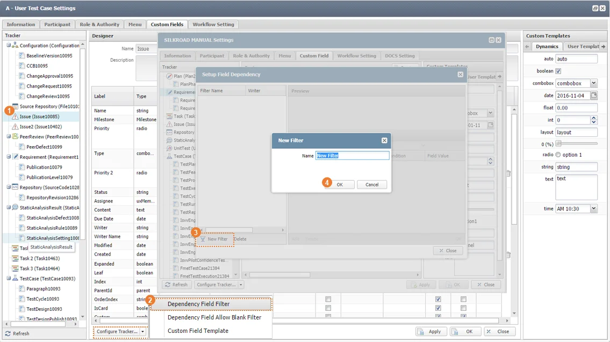 |
① 대상 필터를 선택한다.
② Filter Formulas 영역에서 ‘Add’를 클릭한다.
③ 필터 조건식의 ‘AND/OR’영역을 더블 클릭해 조건을 선택한다.
-‘AND/OR’선택은 두 번째 조건식부터 가능하다.
④ 필터 조건식의 ‘Field Name’영역을 더블 클릭해 대상 필드를 선택한다.
⑤ 필터 조건식의 ‘Condition’영역을 더블 클릭해 조건을 선택한다.
⑥ 필터 조건식의 ‘Field Value’영역을 더블 클릭해 필드 값을 선택/입력한다.
⑦ 필터가 설정한 조건을 만족할 때 적용 필드 상태를 결정한다.
⑧ ‘OK’버튼을 눌러 저장한다.
해당 필터는 디자이너 영역의 ‘Dependency Field Actives Status’칼럼에서 목록을 제공해 선택해 적용한다.
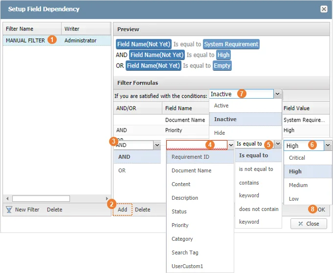 |
필드 값을 대상으로 하는 필터를 생성해 조건에 해당하는 필터에 종속 관계(dependency)를 설정한다. 필드 값이 필터에 해당하는 값을 가질 때 정보창에 표시된 해당 필드가 필수 입력 필드(Required) 또는 선택 입력 필드 상태(Allow Blank)가 되도록 한다.
① 필터를 생성할‘Tracker’를 선택 한다.
② 하단 ‘Configure Tracker Setting’버튼을 누른 후‘Dependency Field Allow Blank Filter’를 클릭한다.
③ ‘Setup Field Dependency’창에서 ‘New Filter’를 클릭한다.
④ 필터 명을 입력하고 ‘OK’버튼을 클릭해 필터를 생성한다.
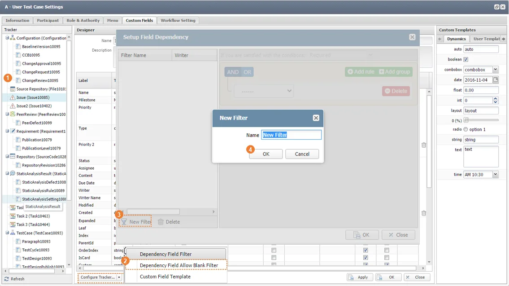 |
① 대상 필터를 선택한다.
② 필터 조건 입력 영역에서 ‘Add Rule’을 클릭한다.
③ 필터 조건식의 ‘AND/OR’조건을 클릭해 선택한다.
-‘AND/OR’선택은 두 번째 조건식부터 가능하다.
④ 첫 번째 입력 영역을 클릭해 대상 필드를 선택한다.
⑤ 선택한 필드의 조건을 선택한다.
⑥ 선택한 필드의 필드 값을 선택/입력한다.
⑦ 필터가 설정한 조건을 만족할 때 적용 필드 상태를 결정한다.
⑧ ‘OK’버튼을 눌러 저장한다.
해당 필터는 디자이너 영역의‘Dependency Field Allow Blank’ 칼럼을 클릭 해 필터 목록에서 필터를 선택해 적용한다.
|
대상 Tracker를 복사해 동일한 타입의 Tracker에 붙여 넣을 수 있는 템플릿을 생성한다. 생성된 템플릿은 실크로드 내 생성된 프로젝트의 ‘Template List’에 생성되어 사용가능하다. 템플릿 파일을 사용자 PC에 .json 파일로 저장(Export)하거나, 저장된 파일을 불러오기(Import) 할 수 있다.
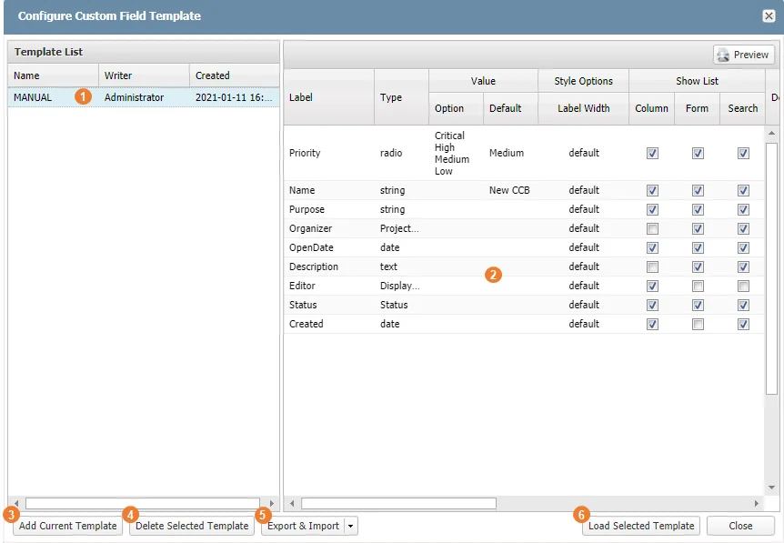 |
구분 | 명칭 | 설명 |
| Template List | 생성된 템플릿 목록 |
| Template View | 템플릿 뷰 제공 |
| Add Current Template | 선택한 Tracker의 템플릿 생성 |
| Delete Selected Template | 선택 템플릿 삭제 |
| Export & Import | 선택한 템플릿을 PC에 저장 & 불러오기 |
| Load Selected Template | 뷰에 표시되는 템플릿을 Tracker로 로드 |
메뉴 별 설정된 워크플로우(Workflow)를 확인하고, 변경하는 기능을 설정한다. 각 메뉴 별로 생성된 워크플로우 목록을 통해 설정하고자 하는 워크플로우를 지정할 수 있다.
|
구분 | 명칭 | 설명 |
| Tracker | 프로젝트에 적용된 트래커 목록 |
| Workflow | 현제 설정된 Workflow 상태 표시 및 변경 |
| Apply | 변경 내용 적용 |
| OK | 변경 내용 저장 후 닫기 |
| Close | 창 닫기 |
① 변경 대상 메뉴의 Workflow 영역을 클릭한다.
② 펼침 목록에서 지정하고자 하는 Workflow를 선택한다.
③ ‘Apply’ 또는 ‘OK’버튼을 클릭해 저장한다.
이미 Workflow 진행중인 아이템을 제외한 기존 생성 아이템과 신규 생성 아이템의 Workflow가 설정한 Workflow로 변경된다.
|
사용자가 설정한 Word 의 스타일을 DOCS 실행 시 기본 스타일로 공통 설정한다. Word 문서를 매크로 사용 서식 파일(*.dotm)로 생성하고, DOCS Setting을 통해 업로드 해 메뉴에 설정한다. 매크로 사용 서식 파일을 지정 받은 메뉴는 DOCS 실행 시 해당 서식 파일을 기본적으로 반영해 실행된다.
① ‘Upload’ 버튼을 클릭한다.
② 대상 매크로 사용 서식 파일(*.dotm)을 선택한다.
|
③ 대상 Document Tracker의 Default 영역을 클릭 한다.
④ 업로드 된 파일 중 지정할 서식 파일을 선택한다.
⑤ ‘Apply’ 또는 ‘OK’버튼을 클릭해 저장한다.
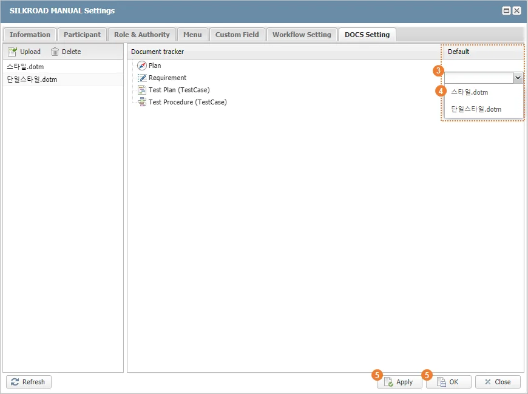 |
번호 | 메시지 | 설명 | 해결방안 |
|---|---|---|---|
1 | |||
2 | |||
3 | |||
4 | |||
5 | |||
6 | |||
7 | |||
8 | |||
9 |